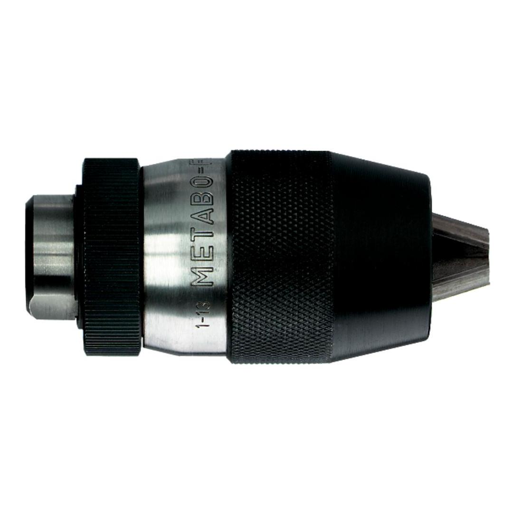

METABO | CHUCK KEYLESS FUTURO NON IMPACT
636362000


Product Description
- Keyless clamping of insertion tools to hand-held and fixed drilling machines
- The chuck readjusts its tension to match the increasing cutting pressure on the cutting bit
- The chuck can be opened easily by hand even after the toughest drilling jobs
- For maximum load
- For clockwise rotating drills only
- Not impact-proof